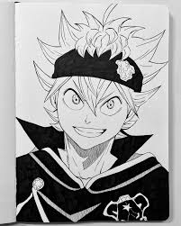
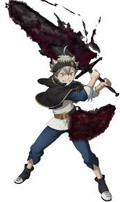

Аста 「アスタ Asuta」

— сирота, воспитавщийся под опекой церкви в Хадж после того, как его мать бросила его на пороге церкви. Когда Асте исполняется 15 лет, он получает гримуар с пятилистным клевером с антимагическим дьяволом внутри. Он присоединяется к отряду Рыцарей-чародеев Королевства Клевера - Чёрный Бык, и становится Старшим Рыцарем-чародеем 1-го класса и Королевским Рыцарем.
Аста - мальчик невысокого роста с хорошо развитой мускулатурой. У него зелёные глаза и светлые растрёпанные волосы пепельного оттенка, с вечно вздёрнутой вверх прядью по центру головы. Он носит чёрную головную повязку, с золотой эмблемой Чёрного Быка и рисунок в виде красной четырёхгранной звезды, с тремя швами на задней стороне. У Асты на теле множество шрамов, которые он получил в результате тренировок или боев, один большой шрам на животе он получил во время боя с Марсом, а второй идущий от правого плеча к левому бедру, от почти смертельной атаки Люциуса Зогратиса.

| Способность |
Описание |
| Навыки мечника |
У Асты изначально был грубый стиль боя из-за того, что он владел необычным мечом и прошел только базовую подготовку у Фанзелля Крюгера. Со временем он развивает большое мастерство благодаря боевому опыту, дополнительным мечам и чувству ки, а также учится на своих многочисленных тренировках, сражаясь бок о бок с другими магическими мечниками и против них. |
| Отсутствие магии |
Аста не способен использовать магию, так как в нем не способна удерживаться магическая сила. Благодаря этому Аста способен использовать Антимагию без вреда для себя, так как Антимагические мечи не могут поглотить у него магию. Также из-за отсутствия магии он не может быть обнаружен сенсорами маны, является невосприимчивым к истощающим существам из Преисподней и может находиться рядом с Генри, который проклят поглощать ману. |
| Повышенная сила |
Аста обладает огромной физической силой, он способен выполнить тысячу отжиманий в стойке на одной руке, и пробивать отверстия в каменных стенах без видимых повреждений для себя. Аста может одной рукой размахивать тяжелыми мечами, с такой силой, что его противники при ударе разбивают камень. Королева Ведьм ещё больше увеличила силу его рук, используя Магию Крови. |